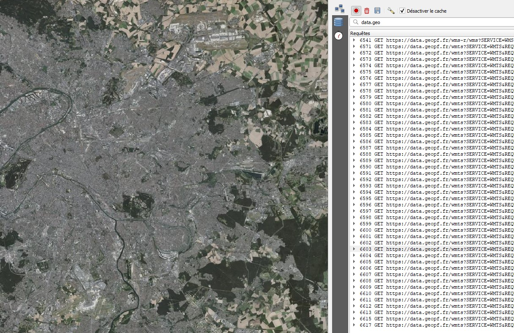

Interopérabilité¶
Dans la géomatique :
Définition¶
interop n'est pas compatibilité
Interopérabilité : système capable de fo,nctionner avec d'autres produits sans restriction d'accès ou d emis ene oeuvre Notion transversale permettant à de soutils de pouvoir comm. et fonct.
compatibilité : Notion verticale faisant qu'un outil peut fonctionner dans un envir. donné
De quoi parle t'on ?¶
C'est échanger des des informations avec les autres systèmes. Langage pivot : langage universel qui limite l'effort de traduction
- exemple de CAO vs SIG (outils QGIS : QCAD)
Les enjeux de l'interrop.¶
La sémantique : Définition standardisé des concepts, de la structure et du sens des données spat. couche VS classe d'entité
Géographique: Coordonnées géo. basées IGN VS LAMBERT
Standards et spec.: L'OGC developpent et promeuvent des standard souverts pour assur l'interrop. OGC faisait des spécifications sur les services et maintenant sur les API. Voir ici
Directives et recommandations (lois): Des initiatives europ. comme INSPIRE -> rendre les données ouvertes notamment environnementales Elle oblige de la diffuser dans différents formats , webservices, , d'ouvrir et partager, de la documenter
Directives et recommandations
Les normes¶
L'organsation internat. de normalisation (ISO) - Normalisation dans le domaine de l'information géo-graphique numérique. ISO/TC 211
- Information géographique — Métadonnées ISO 19115
OGC Open geospatial consortium¶
Organisation internationale à but non lucratif dédiée au développement des systèmes ouverts en géomatique.
Elle a été fondée en 1994 pour répondre aux problèmes de non interopérabilité des applications concernant l'information géographique.
https://www.ogc.org/
Les missions¶
-
regrouper les acteurs concernés afin de développer et promouvoir les standards ouverts.
-
garantir l'interopérabilité dans le domaine de la géomatique
-
favoriser la coopération entre développeurs, fournisseurs et utilisateurs
-
permettre de réaliser des systèmes et des services d'information complexes et ouverts
-
impliquer l’ensemble de la communauté dans le processus d’interopérabilité
Des ressources¶
https://www.ogc.org/resources/ogc-glossary/
-
Une plateforme (le site)
-
les standards internationaux assurant l'interopérabilité
-
des retours d'expériences et bonnes pratiques
-
une communauté de membres
-
des rapports et publications scientifiques
Les géostandards pour une bonne diffusion¶
-
FAIR : Findable, accessible, Interopérable , Reusable
-
TAIR (Thomas) : Trouvable, accessible, interropérable, Réutilisable
Exemple age du WMS vs COG (le tiff a intégre une spec. Clowd optimized geotiff) fonctionnalité qui permet de déposer dans un server et se comporte ensuite comme un web services tuilé. Alors que le WMS, il faut le mettre sur un geoserver qui le transmette. SERVICES Les web services à lire dans une interface librairie javascript openlayer, leaflet. ou client carto PARMI LES STANDARDS
-
Des web-services distants WMS WMTS le plus utilisé WFS remplacé par service vecteur tuilé vectoriel (tuilage par niveau de zoom) WCS il découpe une emprise dans un WMS CS-W pour le moissonnage WPS
-
Des formats (en local) SLD GML KML GPKG WKT CRS
Avantages des web services
- Mise à disposition globale et contrôlée des données spatiales
- Un temps de chargement « côté client » performant
- Une interopérabilité entre les outils SIG
*DEF :* Getcapabilities = porte d'entrée d'un serveur aisni je vais avoir la liste des couches disponibles. Le get capabilities est un fichier XML
WMS RASTER:
Une seule image en fonction de l'emprise. Souvent lourdes

1 2 3 4 5 6 7 8 9 10 11 12 13 | |
WMTS: Web service tuilé

1 2 3 4 5 6 7 8 9 | |
WFS : Il charge directement la totalité des vecteurs
1 2 3 4 5 6 7 8 | |
TMS : Comme le wmts, de petites imagettes mais qui existe déjà sur le serveur.
1 | |
Page puis colonne puis ligne puis image (valeur en png)

Catalogage et Métadonnées¶
La notion de diffusion de donnée a été confirmée par la possibilité de partager des données de qualité.
-
Des données de qualité => exhaustives, propres et géométriquement correctes
-
Des données documentées => fiches de métadonnées suivant des normes de rédaction (ISO 19115 / 19139, INSPIRE, DCAT)
-
Des données diffusables => catalogue de données / métadonnées, Catalogue Service Web CSW
-
Des données réutilisables => accessibles, ouvertes
EXTRACT TRANSFORM AND LOAD¶
-
Extact : le processus d'extraction doit convertir les données dans un format adapté à une transformation ultérieure
-
Transform : Nettoyage, Filtrage, Enrichissement, Division, (spliting), Regroupement.
-
Load : Les données transformées peuvent être chargé dans la base cible.
Spatial ETL
L’ETL Spatial, aussi connu sous l’appellation GTL (« Geographic Transformation and Load ») propose les mêmes fonctionnalités que l’ETL, appliquées à la manipulation des données géographiques.
L’ETL spatial permet :
-
De synchroniser des bases entre-elles,
-
De traduire des jeux de données géographiques d’un format vers un autre (OGR / GDAL),
-
De restructurer complètement le modèle de données et l’adapter au modèle cible, à l’aide d’unités de traitement (transformers chez FME) qui modifient la structure, les attributs et la géométrie des entités.
LES FORMATS DE DONNEES¶
L'information géographique utilisée en géomatique se décline en deux types de données : les données vecteurs et les données rasters. Les logiciels SIG vont stocker ces données vecteurs et rasters dans des fichiers dont le format est varié en fonction des logiciels.
https://georezo.net/wiki/main/donnees/extensions
TIF : Geotif il embarque nativement les informationhs de georeferencement (encapsulage)
JPEG2000 : Format compréssé qui embarque aussi le georeferencement